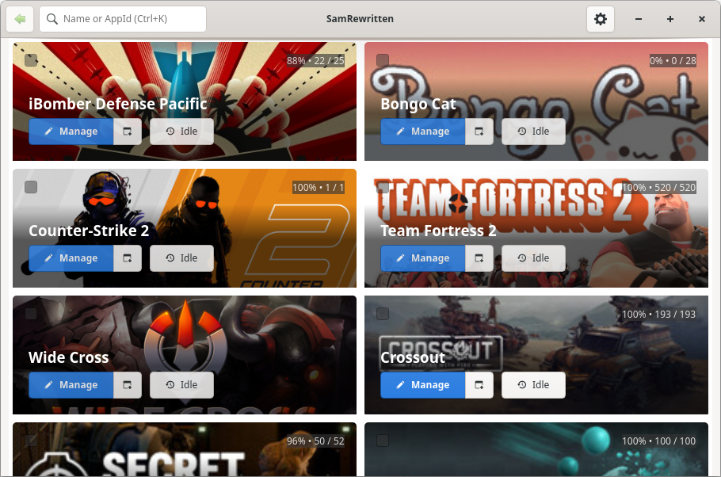
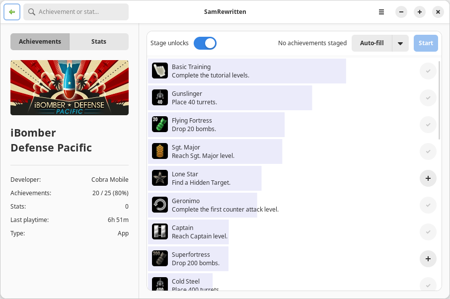

What is SamRewritten?
SamRewritten is a tool that lets you unlock and relock achievements on your Steam account. It can also edit statistics for games and apps that expose them. While achievements carry no financial value, they are widely used for collection progress and bragging rights. SamRewritten ships with both a polished GTK graphical interface and a scriptable command-line tool.


Features
- Lock and unlock specific achievements with a single click
- Bulk lock/unlock achievements for all or selected apps
- Schedule achievement unlocks over a custom period
- Edit game statistics in real time
- Per-app or bulk import/export of achievements and stats (JSON)
- Idle apps: appear in-game until you toggle it off
- Light and dark themes
- Full-featured CLI that does not require GTK
Installation
Windows
Download the official installer from the Releases page and launch SamRewritten from the Start menu. A portable ZIP is also available.
Linux
Download the latest AppImage from the Releases page, mark it executable, and run it. Arch users can install from the AUR:
yay -S samrewritten-git
On Linux, SamRewritten supports Snap installations of Steam, Ubuntu/Debian multiarch and .deb
installations, and distributions using the Steam runtime (Gentoo, Arch, where ~/.steam/root exists).
Frequently asked questions
Does SamRewritten work on Linux?
Yes. It provides Linux AppImages and is on the AUR (samrewritten-git). It supports Snap Steam,
Ubuntu/Debian multiarch and .deb installs, and Steam-runtime distros such as Gentoo and Arch.
What is a Steam Achievement Manager?
A Steam Achievement Manager (SAM) lets you unlock and relock achievements on your Steam account and edit game statistics. SamRewritten is a modern, open-source SAM for Linux and Windows.
Is SamRewritten free and open source?
Yes — it is free and open source, hosted on GitHub. It is not affiliated with Valve Corporation or Microsoft.
Does SamRewritten support Flatpak?
Not yet. Flatpak support is a significant technical challenge. Contributors familiar with Flatpak internals are welcome to help via the GitHub repository.
Can I use SamRewritten from the command line?
Yes. The CLI does not require GTK and can list apps/achievements/stats, lock/unlock in bulk, import/export JSON, and idle apps.
Acknowledgements
SamRewritten is heavily inspired by Steam Achievement Manager by Gibbed and Samira by jsnli, and by the legacy version of SamRewritten. Thank you to all contributors, users, and stargazers.